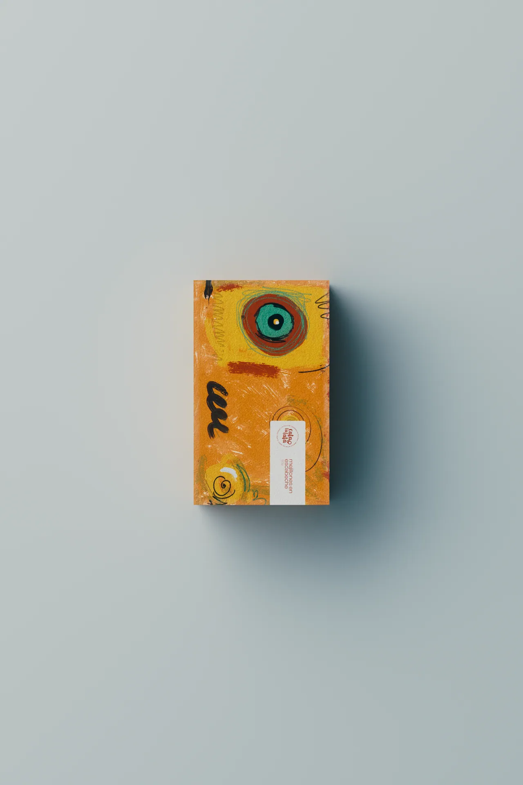
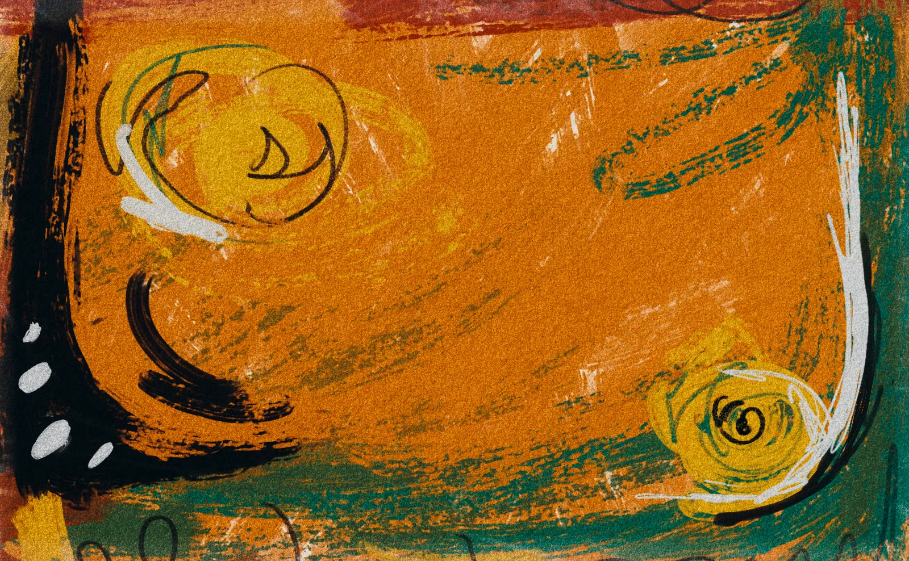
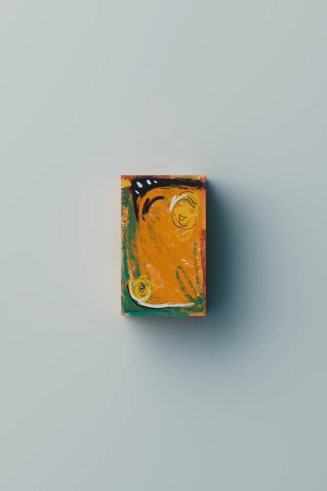
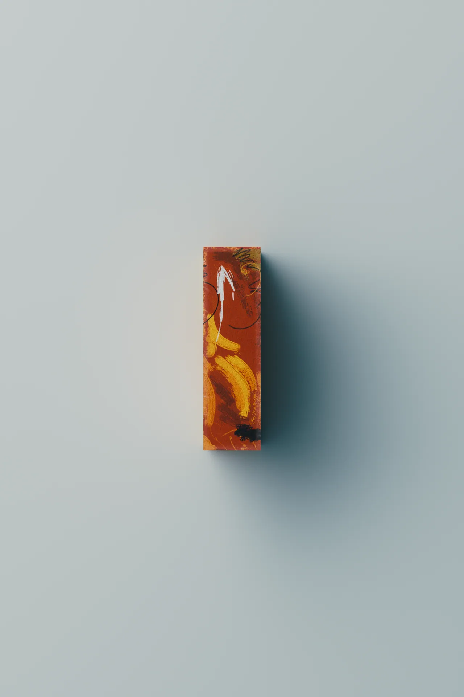
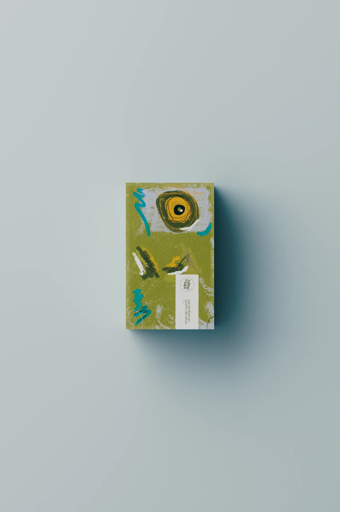
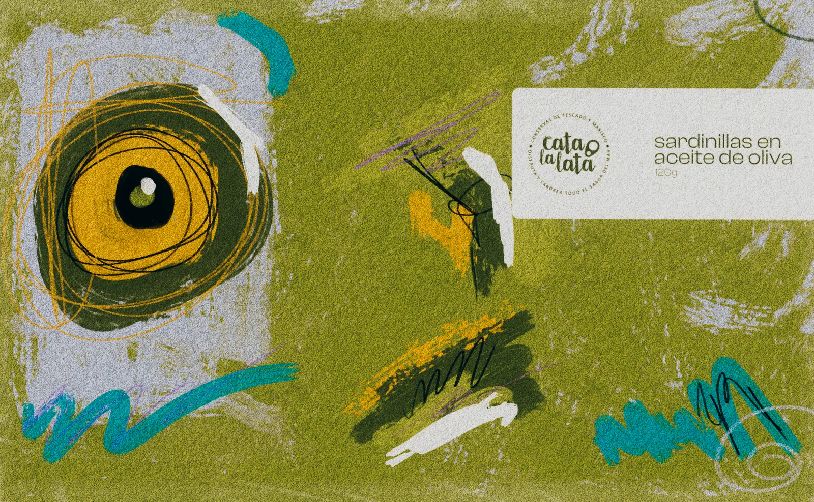
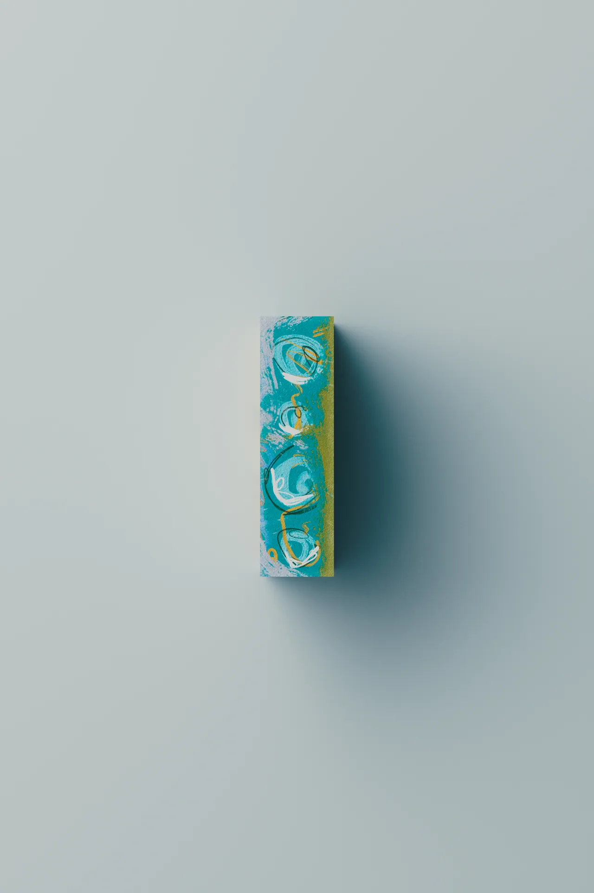
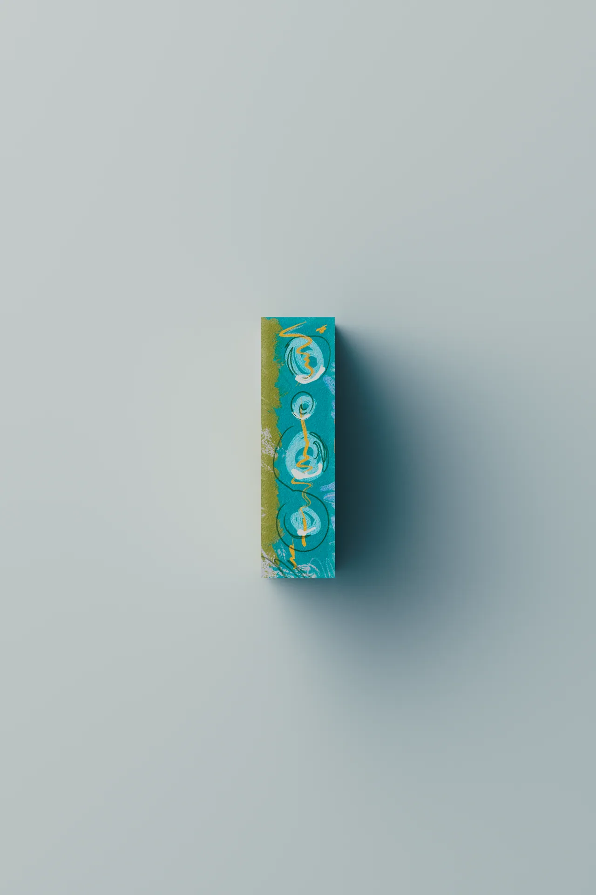
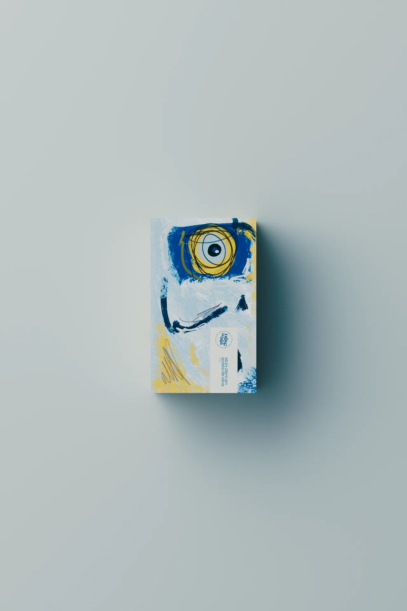
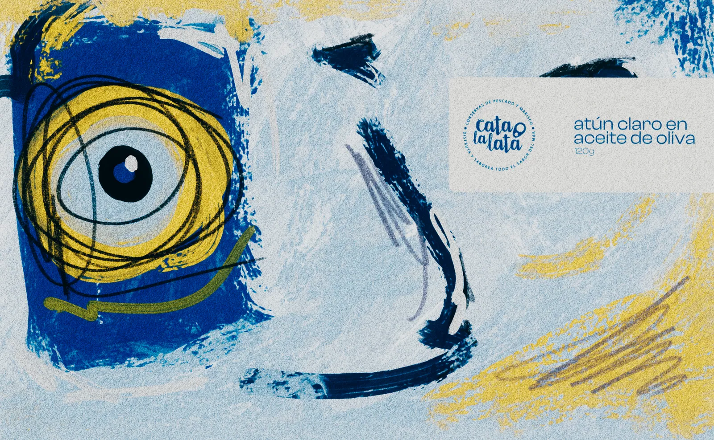
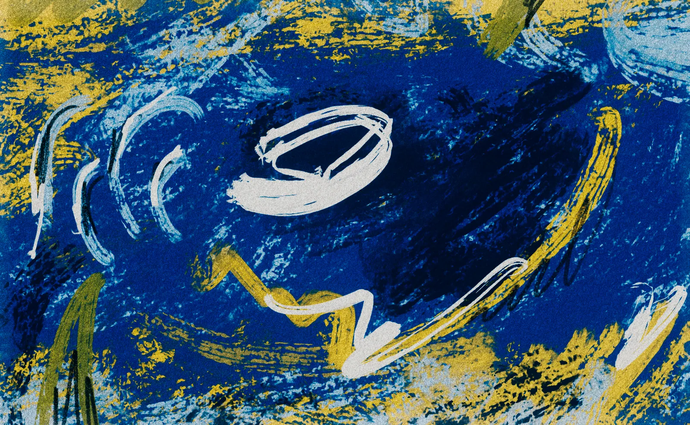
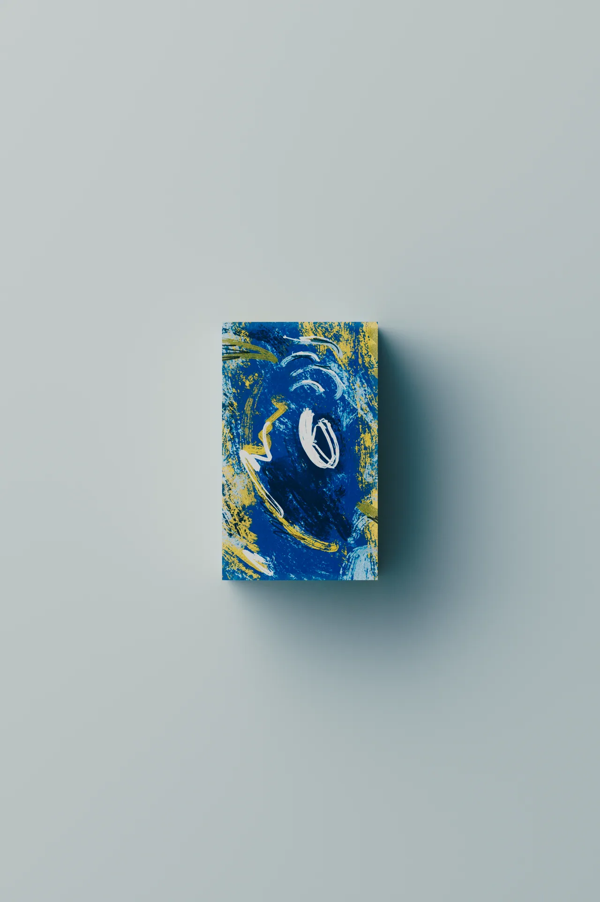
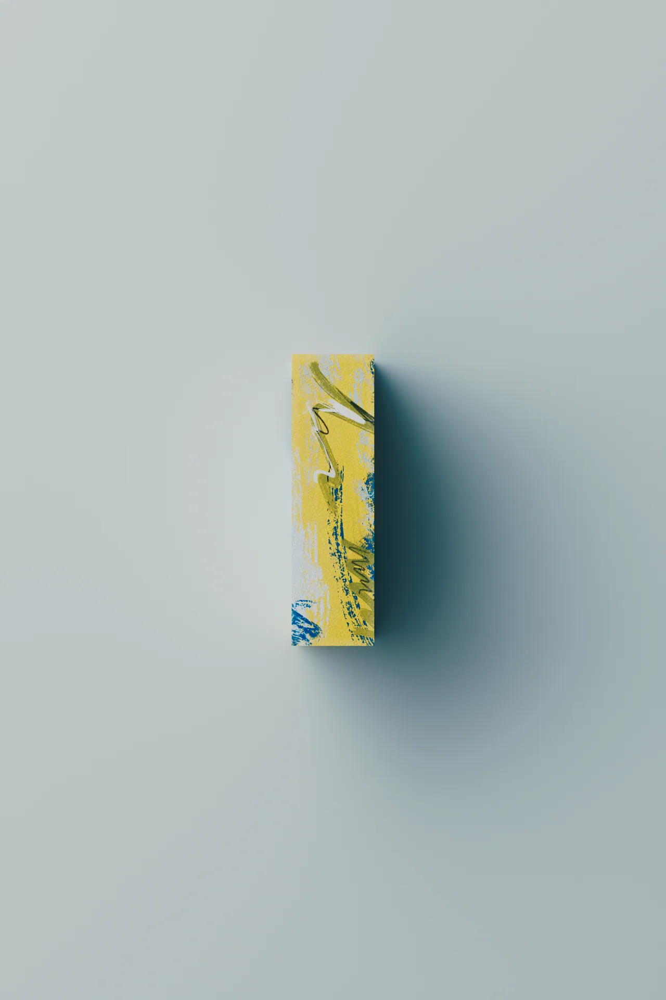
Proyecto de packaging para Cata la Lata, concurso organizado por Banco Sabadell. El objetivo era aportar un diseño innovador al consumo de alimentos en conserva: mejillones en escabeche, sardinillas en aceite de oliva y atún claro en aceite de oliva. Decidí dibujar cada alimento de forma abstracta, descomponiéndolo como una especie de Frankenstein, y apostar por un diseño experimental y conceptual, más allá del lujo, que incitara al consumo de un público más joven. Para ello experimenté con técnicas como el acrílico, los crayones y el escaneado.